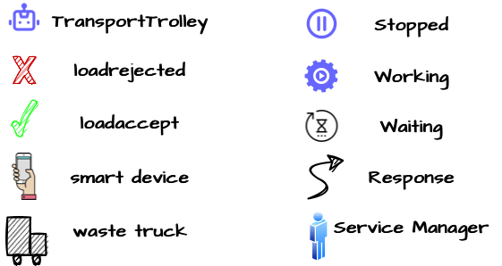
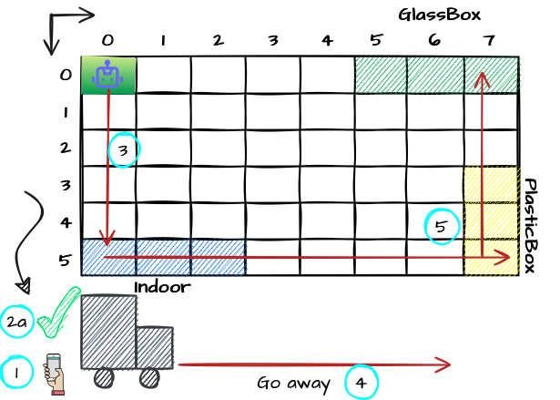
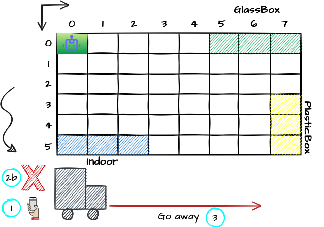
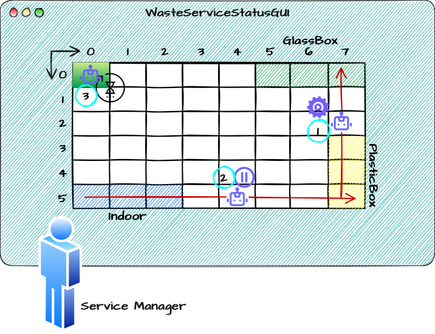

Introduction
Requirements
Requirement analysis
Formalization of the requirements
To formalize the requirements we will use the constructs of the Kotlin language.
Tuttavia, alcuni requisiti introducono un "abstraction gap", che risulta difficile colmare con i costrutti dei linguaggi di programmazione comuni.
In order to formalize the requirements we will use the
Service Area
A conventional rectangular room whose dimension are known, free of internal obstacles and bordered by solid walls. We can formalize the room as a rectangle of size "val serviceAreaLength : Floatval serviceAreaWidth : Float
PlasticBox
Container adibito al deposito di materiale plastico, con capienza massima pari a MAXPB Kg.Puo' essere formalizzato usando:
- una costante,
MAXPB , per indicare la capienza massima del container - una variabile,
currWeightPb , che esprime il peso corrente della plastica contenuta nel container.
val MAXPB : Floatvar currWeightPb : Float
GlassBox
Container adibito al deposito di materiale vetroso, con capienza massima pari a MAXGB Kg.Puo' essere formalizzato usando:
- una costante,
MAXGB , per indicare la capienza massima del container - una variabile,
currWeightGb , che esprime il peso corrente del vetro contenuto nel container.
val MAXGB : Floatvar currWeightGb : Float
Deposit Action
Rappresenta una sequenza di azioni eseguite dal- prelevare un "waste load" dal "waste truck" che si trova in
INDOOR . (D'ora in avanti ci riferiremo a questa microazione comePickingup ) - spostare il carico dall'
INDOOR all'apposito container (PLASTICBOX oGLASSBOX ). - depositare il carico nel container. (D'ora in avanti ci riferiremo a questa microazione come
Droppingout )
Sonar
Led
DLIMIT
Valore prefissato che indica la distanza massima dal sonar a cui un oggetto si puo' trovare senza compromettere il funzionamento delPuo' essere formalizzato tramite una costante:
val DLIMIT : Float
TruckLoad
Represents the weight, expressed in Kg, of the waste that the waste truck intends to deposit.var truckLoad : Float
Type of the material
Represents the material, Plastic or Glass, of the waste that the waste truck intends to deposit.enum class Material { PLASTIC, GLASS }
Current state of the transport trolley
Indicates the status of thePuo' essere formalizzato tramite un enumerativo:
enum class CurrStateTrolley { IDLE, STOPPED, MOVING, PICKINGUP, DROPPINGOUT }
Current state of the led
Indicates the status of theenum class CurrStateLed { ON, OFF, BLINKING }
Deposit request
Rappresenta la richiesta di deposito del meteriale; viene inviata dal guidatore delPoichè non esiste alcun costrutto "built-in" nel linguaggio Kotlin o in altri linguaggi "general purpose", per esprimere il concetto di
Request storeWaste : storeWaste(MATERIAL, TRUCKLOAD)
Loadaccept
Rappresenta una risposta positiva che ilLa formalizzazione di tale concetto può essere espressa tramite l'utilizzo del linguaggio Qak:
Reply loadaccept : loadaccept(_)
Loadrejected
Rappresenta una risposta negativa che ilLa formalizzazione di tale concetto può essere espressa tramite l'utilizzo del linguaggio Qak:
Reply loadrejected : loadrejected(_)
WasteService
E' il servizio che si occupa di coordinare tutte le attività di raccolta e smistamento dei rifiuti, interfacciandosi con ilIl
Per verificare il corretto funzionamento delQActor wasteserviceactorcontext ctxwasteservice {State setupinitial { ... }Goto idleState idle { ... }Transition t0whenRequest storeWaste -> requestEvaluationState requestEvaluation {onMsg (storeWaste : storeWaste(MAT, QUA)){if [# boxState.canStore(requestMaterialToStore, requestWeightToStore) #] { ...replyTo storeWastewith loadaccept : loadaccept(_) }else {replyTo storeWastewith loadrejected : loadrejected(_) } } }Goto idle }
var storeWaste = "msg(storeWaste, request, testunit, wasteserviceactor, storeWaste(PLASTIC, 100),1)"var asw = conn.request(storeWaste) assertTrue(asw.contains("loadaccept"))var storeWaste = "msg(storeWaste, request, testunit, wasteserviceactor, storeWaste(PLASTIC, 1000),1)"var asw = conn.request(storeWaste) assertTrue(asw.contains("loadrejected"))
DDR Robot
Il- muoversi avanti-indietro lungo una direzione costante
- fermarsi
- ruotare di 90° a destra o sinistra
Il committente fornisce del software in grado di interfacciarsi con il
L'attore Qak basicrobot.qak di
Il basicorobot è in grado di eseguire comandi base di spostamento inviando messaggi:
Servendosi di questi comandi elementari il//MOVE = w | s | l | r | h Dispatch cmd : cmd(MOVE)
Request step : step(TIME)Reply stepdone : stepdone(V)Reply stepfail : stepfail(DURATION, CAUSE)
User Stories
In order to make the images that describe the User Stories more understandable, we introduce the following legend:
Store waste
As a waste truck driver:
-
When I arrive in the
Indoor area, I intend to notify my interest in depositing a waste load through a smart device1. I expect theWasteService to provide some tools to specify the type of load (Plastic or Glass) and the weight of the load. I expect to receive a positive (loadaccept )2aor negative (loadrejected )2bresponse. -
If the response is positive (
loadaccept ), I expect thetransport trolley to pick up the waste load3and move it from theIndoor area to the appropriate container5. In any case as soon as thetransport trolley takes the waste load, I free theIndoor area and leave4. -
If the received answer is negative (
loadrejected ), I will free theIndoor area and go away3.

Supervise service-area
As a service-manager, I intend to use the
-
The current state of the
transport trolley (working1, stopped2, idle3) and its position in the room.
 -
The current weigth of the material stored in the two waste-containers 34.

-
The current state of the Led (off, on, blinking) 5.

Problem analysis
By students:
Name: Annamaria Simonitto, Enrico Valastro, Alessio Reitano
Email: annamaria.simonitto@studio.unibo.it, enrico.valastro@studio.unibo.it, alessio.reitano@studio.unibo.it